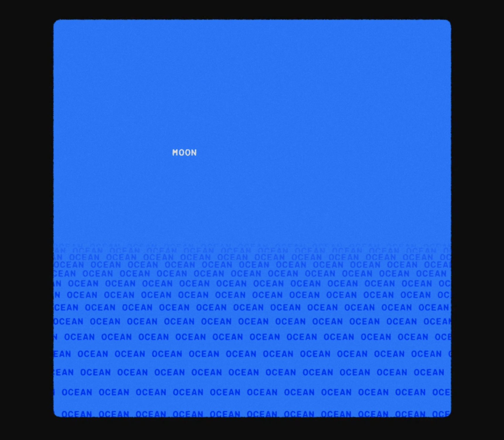

When first approached with this project, I was inspired by the 'Words' animation by Enle Li. Seeing the beautiful animation made me reflect my own usage of words.
I grew up in a family where I had to learn my home language by myself. My family never taught me Tagalog (the main dialect of the Philippines). I learned by listening, reading, and watching books and shows such as Percy Jackson, Downton Abbey, or even Jeporady.
However, as I aged, most commonly spoken words were not displayed on television nor in books, but on our screens and in common conversations. As an extreme introvert this poses a problem and on a day to day basis, I feel like the old grandma who constantly askes, 'What did you say? What does that mean?'